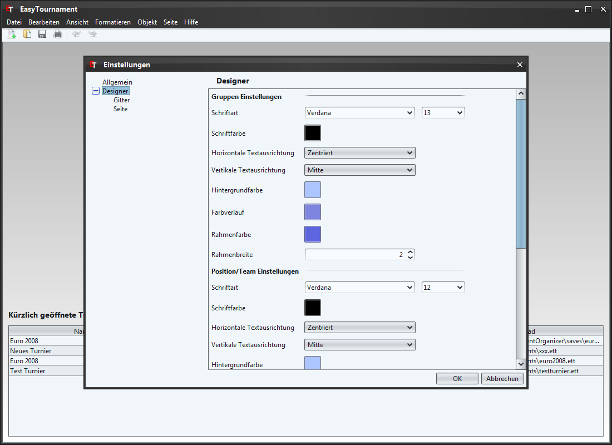
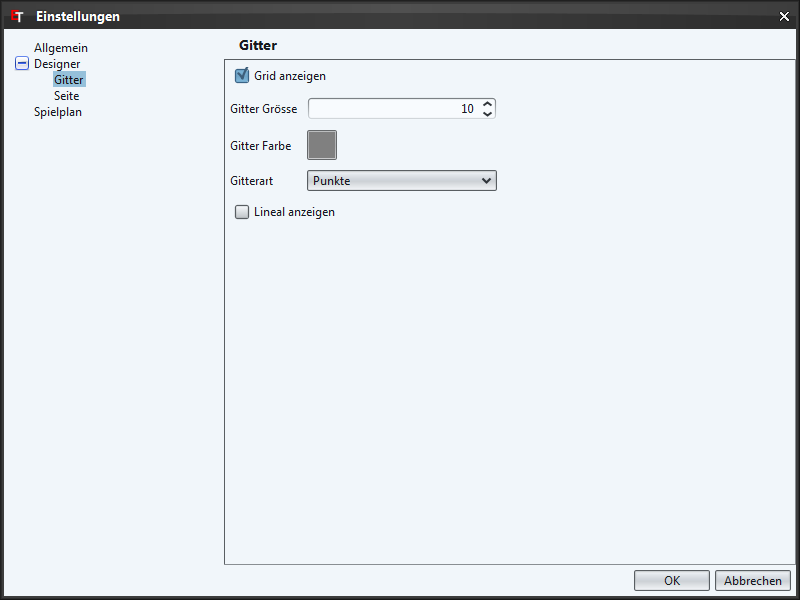
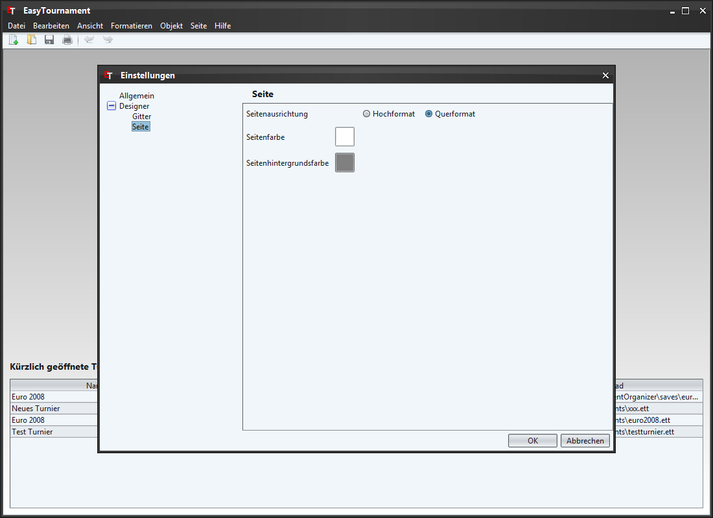

zurück zur Übersicht

Hier lassen sich die Standard Farben, Schriftarten usw. der Gruppen, Positionen und Linien/Pfeilen festlegen.

Diverse Einstellungen für das Gitter und den Lineal.

Standard Seitenausrichtung und Farbe.